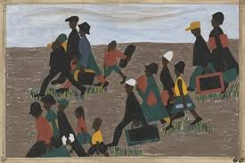

Uma série de 60 painéis pintados com cores fortes e formas simplificadas que narra a migração de milhares de afro-americanos do sul para o norte dos EUA, fugindo da opressão racial e buscando trabalho. Lawrence, filho de migrantes, deu voz a essa história esquecida pela arte oficial. A série mistura narrativa histórica e sensibilidade artística, sendo um marco da arte afro-americana.
Creditos reservados ao Leonardo, Vinicius, Ryan e giovanny